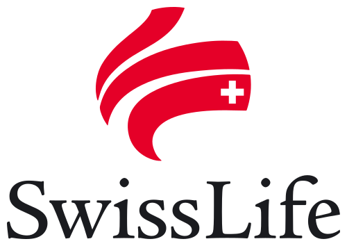

Axem IA, depuis 2023

Deux profils,
un seul duo.
Rencontrés en double master ESSEC × Télécom Paris. Deux visions, la stratégie et la technique, qui fusionnent en une seule. Ensemble, ils ont fondé AXEM IA. Aujourd'hui formateurs et conférenciers, ils ne comptent pas s'arrêter là.
Sur le terrain
Ce qu'on fait ensemble.
Formations, ateliers, audits, conférences : à deux, sur de vrais dossiers.
Le laboratoire
On teste avant de vendre.
On est sur Claude et l'IA générative depuis 2023, avant que tout le monde en parle. On a été pionniers, quand beaucoup ne comprenaient pas encore. On continue de tester, de faire de la veille, et on ne compte pas s'arrêter là.
Ils publient plusieurs fois par semaine, surtout sur Claude.
En chiffres, à deux.
+200entreprises accompagnées
+3 000collaborateurs formés
94 292abonnés LinkedIn cumulés
Ils nous font confiance





Le duo continue. On teste, on forme, on publie, à deux.